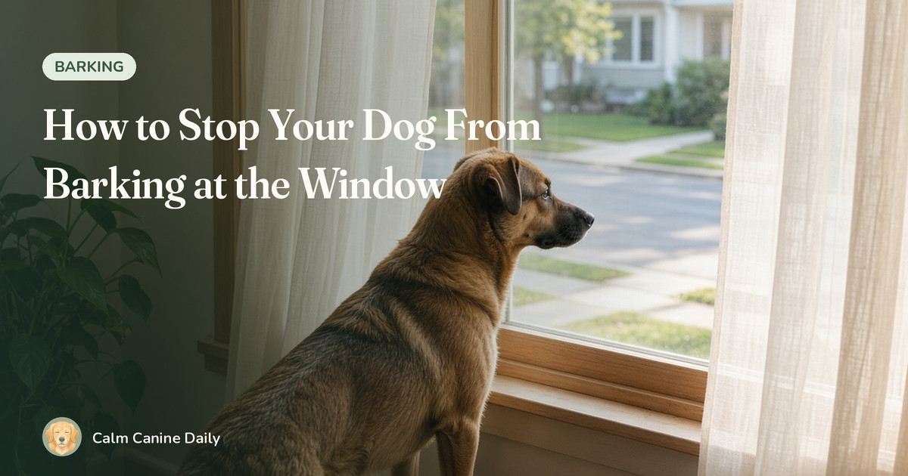

How to Stop Your Dog From Barking at the Window

If you want to know how to stop dog barking at the window, don’t start by yelling at the glass. To your dog, that can sound like you are joining in — and the person, dog, or delivery truck outside still gets the last word.
Window barking is common, and it often becomes a habit because it works from the dog’s point of view. The walker moves on, the mail carrier leaves, and barking just “cleared the yard.” A better plan is to manage the rehearsal, teach a simple check-in, and practice when the trigger is still easy.
Educational content only. Some links on this page are affiliate links. If you purchase through one, we may earn a commission at no extra cost to you. We do not impersonate or speak for any course creator.
About this article. Educational tips from Calm Canine Daily for everyday US owners. This is not veterinary advice, a diagnosis, or a guaranteed result. We are not a certified training practice and we do not claim CPDT or DVM credentials. If you are worried about a bite risk or a situation you cannot manage safely, pause and get qualified in-person help.
Key takeaways
- Window barking is often self-reinforcing: the trigger leaves, so the bark feels effective.
- Blocking or limiting the view is not a failure. It is how you stop the habit from being practiced all day.
- Teach “notice it, check in with me, get paid,” then practice on quiet days — not only when the mail truck arrives.
- Yelling, spraying, or punishing the bark can add fuel. Give your dog something else to do instead.
In this article
- Why dogs bark at the window
- What not to do
- Step 1. Manage the view
- Step 2. Teach a 3-second check-in
- Step 3. Add a place to go
- Step 4. Practice when it is easy
- When to get extra help
- FAQ
Why dogs bark at the window
Dogs bark at windows for more than one reason, and the reason can change from one hour to the next. Some are alerting. Some are excited. Some are worried. Some are frustrated because they can see or hear something they cannot reach or cannot chase away.
The American Kennel Club’s training advice on this topic, written with input from certified trainer Rachel Lane, is useful here: barking at the window can become a routine, and it can be self-reinforcing. If the mail carrier was already walking to the next house, your dog may still conclude “my barking made them leave.” The same article notes that a window can create barrier frustration — not the same thing as wholesome “enrichment.” Looking out is not automatically relaxing for every dog.
Source: Does Your Dog Bark Out the Window? What to Do About It (AKC, updated June 1, 2026).
You do not need to diagnose the exact emotion to start helping. You need to stop all-day rehearsal, and you need a behavior you do want: a glance at you, a walk away from the glass, a settle on a mat.
What not to do
Don’t yell at the window. A sharp “hey!” can match the arousal already in the room. Some dogs take it as backup.
Don’t rely on punishment. Shock, spray, or a shake can make a worried dog more worried, and they still do not teach a next step. We do not use or recommend those tools.
Don’t only say “no” or “quiet” with nothing to follow it. “Stop” is not a plan. Your dog needs a job that pays.
Don’t leave them stationed at the glass all afternoon if you already know that view sets them off. That is practice, and practice makes the habit stronger.
Step 1. Manage the view
Management is the unglamorous half of this plan, and it is often the half that makes training possible.
- Close the blinds, use a privacy film on the lower half of the glass, or move a sofa that currently gives your dog a lookout.
- If one room is the problem, close the door to that room when you cannot train.
- A fan or low radio can take the edge off passing sounds. It will not “cure” barking, but it can lower the volume of the street.
- When you are practicing, open a little access on purpose so you can teach. The rest of the day, reduce free rehearsal.
This is temporary for many dogs and longer-term for others. Either way, it is kind. You are not “avoiding training.” You are choosing when training happens.
Step 2. Teach a 3-second check-in
The skill is simple: your dog notices something outside, looks back at you (or toward you), and gets paid away from the glass.
- Stand a few steps back from the window with very good treats. Start at a time of day when passersby are infrequent.
- The moment your dog orients to a sound or a movement — ears up, body still, before a full explosion — quietly say their name.
- When they glance at you, mark it (a calm “yes,” or a click if you already use one) and deliver the treat away from the window, toward the middle of the room.
- Let them look again. Repeat. You are paying the check-in, not arguing with the bark.
- If they already erupted, you waited too long or the trigger was too hard. Close the view, reset, and try an easier moment.
You are building a new loop: notice it, check in, get paid. Keep sessions short. End while it is still going well.
If they cannot glance at you at all, the trigger is too close or too exciting. Increase distance, shrink the view, or practice with a milder sound first.
Step 3. Add a place to go
A check-in is easier when your dog has a place that already pays.
Teach a mat or a bed in a quieter part of the same room (the checklist’s five-minute settle is built for this). Toss a couple of treats onto the mat so they step on it willingly. Pay them for staying. Then, after a successful window check-in, you can trot together to the mat and pay there.
Some owners also teach “get a toy” as an alternative, because a dog with a toy in their mouth is not rehearsing a bark in the same way. Use whatever you can reliably reward.
Step 4. Practice when it is easy
The mail truck is a poor first classroom. Practice on a Tuesday mid-morning, or with a helper walking past at a distance you chose. Once the glance at you is easy, move a little closer to the real trigger, or open the blinds a little more.
If a delivery is about to happen and you are not in a training session, use management: call your dog away, close the view, and hand over a chew or scatter a few pieces of kibble in another room. You can also, when you are ready, pair the sound of a delivery with a small handful of treats so the event starts to predict food instead of a sprint to the glass. Go at a pace your dog can handle. If they cannot eat, you are too close to the trigger.
When to get extra help
Get a veterinarian involved if barking started suddenly, if it comes with other signs of pain or distress, or if you are simply unsure whether something medical is going on.
Get a qualified trainer or behavior professional involved (credentials such as CPDT-KA or CBCC-KA are one useful filter) if the barking is paired with hard staring, lunging that is getting worse, or a bite risk, or if you cannot find a starting distance where your dog can think. An article is not enough in those cases. An online course is not enough either.
FAQ
Is it normal for dogs to bark at the window?
Yes, it is common. Common is not the same as harmless. A lot of rehearsal can leave a dog more agitated, not more “enriched.”
Will my dog stop if I just ignore it?
Usually not, because the street often pays the bark for you. Manage the view and teach a check-in.
Should I punish the bark?
No. Punishment can add fear or frustration and still leaves you without a next step. Reward the glance away from the glass.
Do I have to block the window forever?
Not necessarily. Some dogs can earn more access as the new habit gets stronger. Some are happier with a permanently quieter lookout. Let your dog’s body language, not a rigid rule, decide.
Can a course replace this plan?
No. Use the steps above, and the free checklist if you want a week of short habits. A longer program is optional, and only after the basics are in motion.
Related guides
- Why a Tired Dog Still Won’t Settle
- How to Stop Your Dog From Jumping on Guests
- Why Your Dog Pulls on the Leash
- Brain Training for Dogs review
- More barking guides
- Get the free 7-Day Calm Dog Checklist
Sources
- Does Your Dog Bark Out the Window? What to Do About It (American Kennel Club, updated June 1, 2026). Cited above for the idea that window barking can be self-reinforcing and can involve barrier frustration.